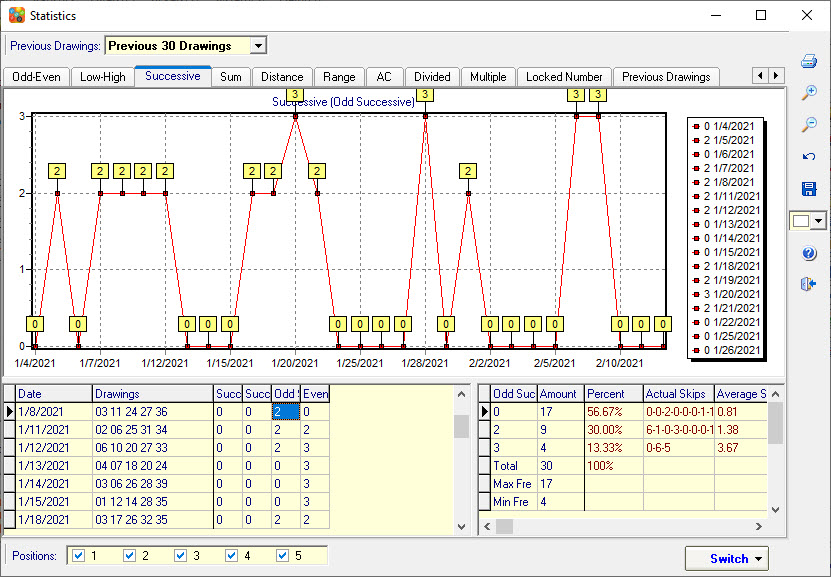

Successive Analysis |
Click
menu->Statistics->Successive to open the
Successive analysis.
What is the successive
number?
The successive number is the adjacent number in a
combination. For example 04 05 26 27 28 43, 04 05 and 26 27 28 are all
successive numbers.l numbers into multiple number groups, then counts the number
of hits of each range.
Successive: Count all adjacent numbers in a
combination and find the group with the highest amount of adjacent numbers. For
example 03 04 25 26 27 43, 03 04 and 25 26 27 are all the successive numbers, 03
04 adjacent amount is 2, and 25 26 27 adjacent amount is 3, so
Successive=3.
Successive
Groups: Count all adjacent numbers in a combination and find the group
amount of adjacent numbers. For example 03 04 25 26 27 43, 03 04 and 25 26 27
are all the successive numbers, 03 04 is a group and 25 26 27 is a group, so
Successive Groups=2.
Odd
Successive: Count all odd adjacent numbers in a combination and find
the group with the highest amount of odd adjacent numbers. For example 03 13 25
26 27 43, 03 13 25 and 27 43 are all the odd numbers, 03 13 25 adjacent amount
is 3, and 27 43 adjacent amount is 2, so Odd Successive=3..
Even Successive: Count all even adjacent numbers
in a combination and find the group with the highest amount of odd adjacent
numbers. For example 04 12 22 25 33 43, 04 12 22 are all the even numbers, the
adjacent amount is 3, so Even Successive=3.

Home
Page: http://www.samlotto.com
Support:support@samlotto.com
Copyright: © SamLotto Lottery Software
Team All rights reserved.